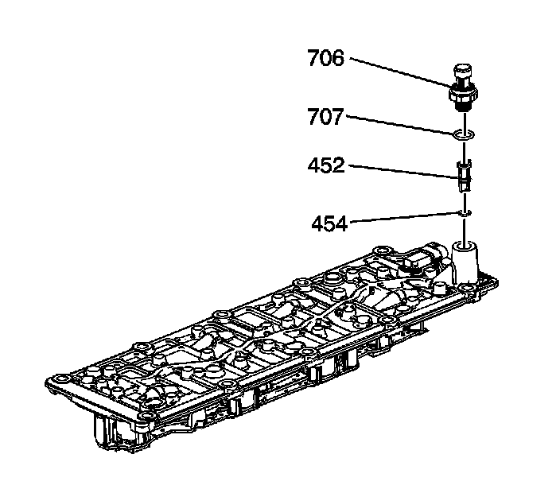

88. Valve Lifter Oil Filter Installation
Valve Lifter Oil Filter Installation

Important: Do not allow dirt or debris to enter the oil passages of the manifold. Plug, as required.
1. Install a NEW oil filter (452) and O-ring (454) assembly.
2. Apply sealant GM P/N 12346004 (Canadian P/N 10953480) to the threads of the sensor.
Notice: Refer to Fastener Notice.
3. Install the oil pressure sensor (706) and washer (707).
Tighten the oil pressure sensor to 35 N.m (26 lb ft).